Provided datasets
Curated by scientists from leading labs
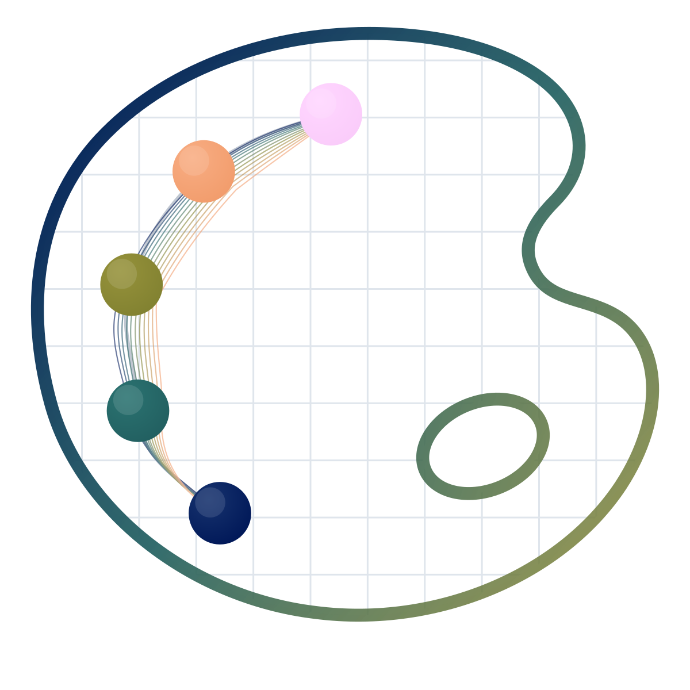
chartistry-lab SubmitA one-week visualization challenge using real scientific datasets. Turn numbers into insight, share your story, and help build a gallery of scientific perception.
Curated by scientists from leading labs
Create and submit your visualization
Help choose standout visual stories
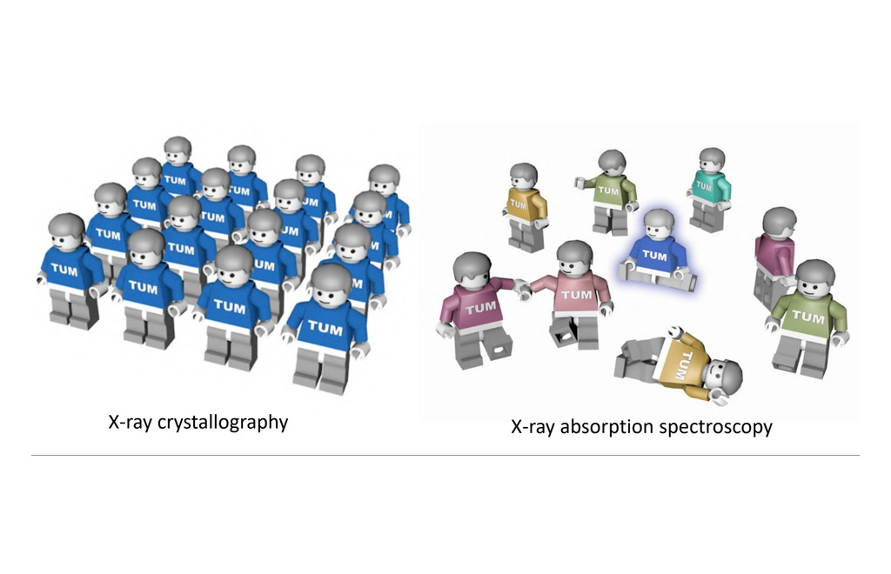
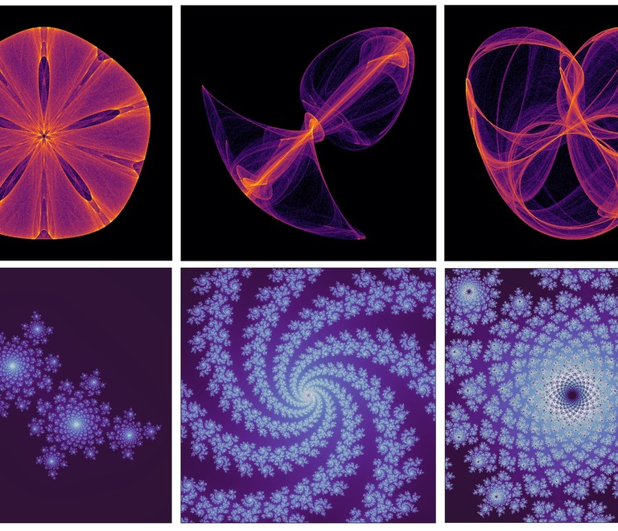
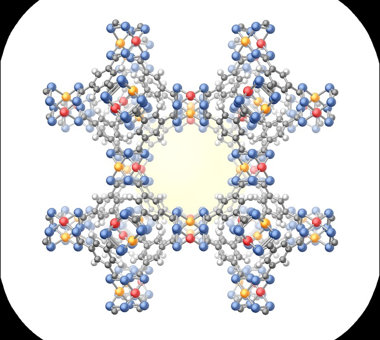
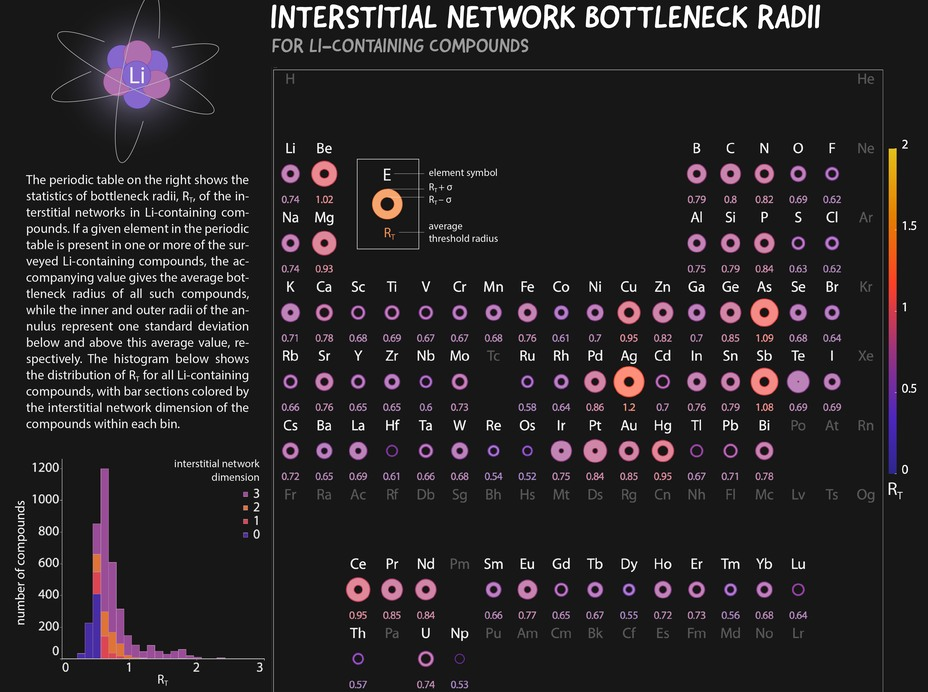
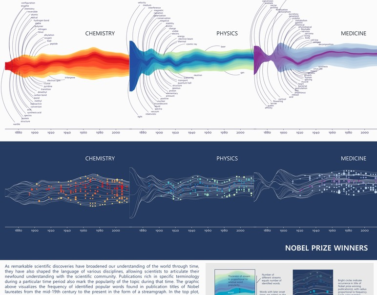
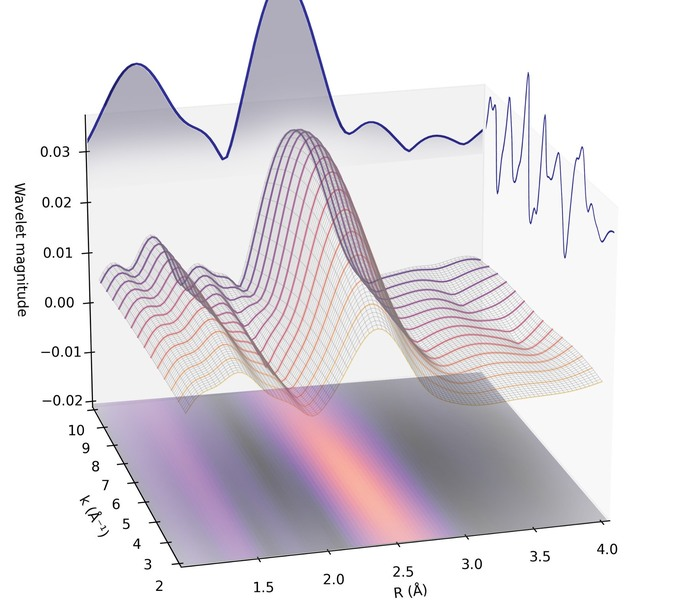
The unexpected is often right there in the data - you just need the right view.
- Argonne Data Visualization Challenge
Choose one of two curated scientific datasets provided for the challenge.
You have one week to explore the data and create your visualization.
Upload your final image and caption explaining the insight. Add optional method notes.
Your work is added to the Visualization Atlas - a growing gallery of scientific perception.
The community votes across categories to recognize the most impactful stories.
Principles of visual communication for science and research figures that inform.
Use AI to explore, generate, and refine insightful scientific visuals responsibly.
Understand X-rays, from sources to spectroscopy and imaging.
Explore how synchrotrons work and how they enable powerful measurements.
From 2D images to 3D and 4D - principles and best practices in imaging.
A living gallery of scientific perception from our community.
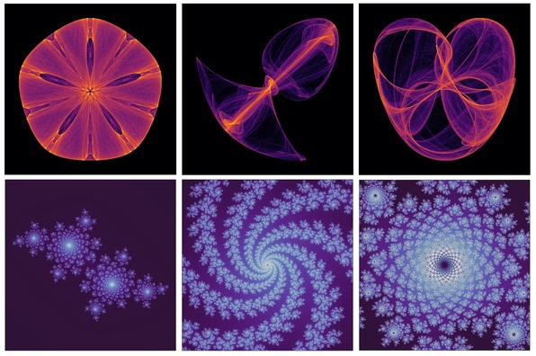
by Nina Andrejevic
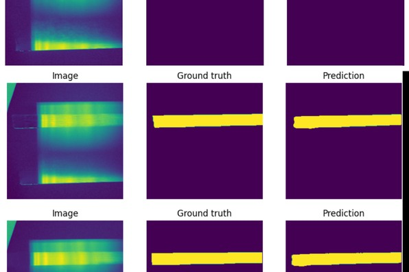
by Juanjuan Huang
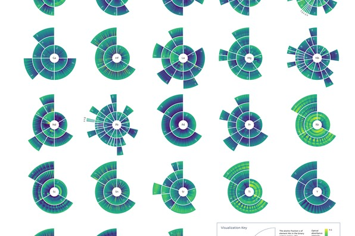
by Nina Andrejevic
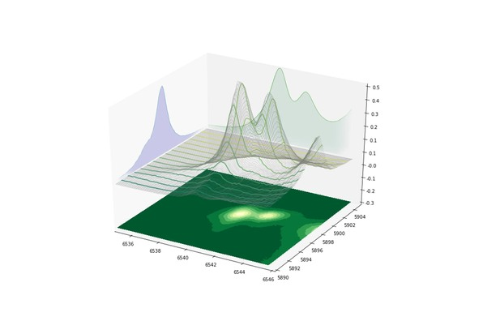
by Juanjuan Huang
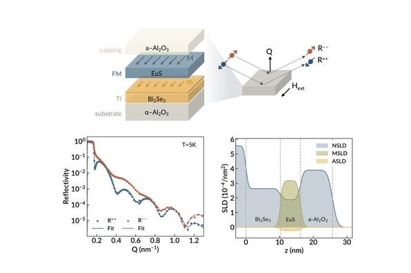
by Nina Andrejevic
Previewing category: Most Unexpected Insight